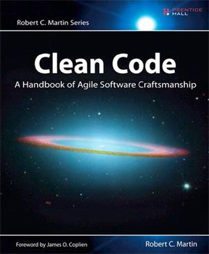

1. The Art of Invisibility - Kevin Mitnick
Be online without leaving a trace. Your every step online is being tracked and stored, and your identity literally stolen. Big companies and big governments want to know and exploit what you do, and privacy is a luxury few can afford or understand.
In this explosive yet practical book, Kevin Mitnick uses true-life stories to show exactly what is happening without your knowledge, teaching you "the art of invisibility" -- online and real-world tactics to protect you and your family, using easy step-by-step instructions.
Reading this book, you will learn everything from password protection and smart Wi-Fi usage to advanced techniques designed to maximize your anonymity. Kevin Mitnick knows exactly how vulnerabilities can be exploited and just what to do to prevent that from happening.
The world's most famous -- and formerly the US government's most wanted -- computer hacker, he has hacked into some of the country's most powerful and seemingly impenetrable agencies and companies, and at one point was on a three-year run from the FBI. Now Mitnick is reformed and widely regarded as the expert on the subject of computer security. Invisibility isn't just for superheroes; privacy is a power you deserve and need in the age of Big Brother and Big Data.
2. Ghost in the Wires - Kevin Mitnick
In this "intriguing, insightful and extremely educational" novel, the world's most famous hacker teaches you easy cloaking and counter-measures for citizens and consumers in the age of Big Brother and Big Data (Frank W. Abagnale).
Kevin Mitnick was the most elusive computer break-in artist in history. He accessed computers and networks at the world's biggest companies -- and no matter how fast the authorities were, Mitnick was faster, sprinting through phone switches, computer systems, and cellular networks. As the FBI's net finally began to tighten, Mitnick went on the run, engaging in an increasingly sophisticated game of hide-and-seek that escalated through false identities, a host of cities, and plenty of close shaves, to an ultimate showdown with the Feds, who would stop at nothing to bring him down.
Ghost in the Wires is a thrilling true story of intrigue, suspense, and unbelievable escapes -- and a portrait of a visionary who forced the authorities to rethink the way they pursued him, and forced companies to rethink the way they protect their most sensitive information.
3. Catching the Wolf of Wall Street - Jordan Belfort
The continuation of New York Times bestseller The Wolf of Wall Street tells the true story of Jordan Belfor's spectacular flameout and imprisonment for stock fraud.
In this astounding account, Wall Street’s notorious bad boy—the original million-dollar-a-week stock chopper—leads us through a drama worthy of The Sopranos, from the FBI raid on his estate to the deal he cut to rat out his oldest friends and colleagues to the conscience he eventually found. With his kingdom in ruin, not to mention his marriage, the Wolf faced his greatest challenge yet: how to navigate a gauntlet of judges and lawyers, hold on to his kids and his enraged model wife, and possibly salvage his self-respect. It wasn’t going to be easy. In fact, for a man with an unprecedented appetite for excess, it was going to be hell. But the man at the center of one of the most shocking scandals in financial history soon sees the light of what matters most: his sobriety, and his future as a father and a man.
4. The Harvard Business Review Leader's Handbook - Ron Ashkenas, Brook Manville
The one primer you need to develop your leadership skills.
Put aside all the overhyped new frameworks, the listicles, the "10 best things you need to succeed as a leader today." The critical leadership practices--the ones that will allow a leader to make the biggest impact over time--are well established. They're about how you create a vision and inspire others to follow it. How you make difficult strategic choices. How you lead innovation. How you get results. These fundamental skills are even more important today as organizations and teams become increasingly networked, virtual, agile, fast-moving, and socially conscious.
In this comprehensive handbook, strategy and change experts Ron Ashkenas and Brook Manville distill proven ideas and frameworks about leadership from Harvard Business Review, interviews with senior executives, and their own experience in the field--all to help rising leaders stand out and have a big impact.
HBR Handbooks provide ambitious professionals with the frameworks, advice, and tools they need to excel in their careers. With step-by-step guidance, time-honed best practices, real-life stories, and concise explanations of research published in Harvard Business Review, each comprehensive volume helps you to stand out from the pack--whatever your role.
5. Clean Code – Robert Cecil Martin

Even bad code can function. But if code isn’t clean, it can bring a development organization to its knees. Every year, countless hours and significant resources are lost because of poorly written code. But it doesn’t have to be that way.
Noted software expert Robert C. Martin presents a revolutionary paradigm with Clean Code: A Handbook of Agile Software Craftsmanship . Martin has teamed up with his colleagues from Object Mentor to distill their best agile practice of cleaning code “on the fly” into a book that will instill within you the values of a software craftsman and make you a better programmer—but only if you work at it.
What kind of work will you be doing? You’ll be reading code—lots of code. And you will be challenged to think about what’s right about that code, and what’s wrong with it. More importantly, you will be challenged to reassess your professional values and your commitment to your craft.
Clean Code is divided into three parts. The first describes the principles, patterns, and practices of writing clean code. The second part consists of several case studies of increasing complexity. Each case study is an exercise in cleaning up code—of transforming a code base that has some problems into one that is sound and efficient. The third part is the payoff: a single chapter containing a list of heuristics and “smells” gathered while creating the case studies. The result is a knowledge base that describes the way we think when we write, read, and clean code.
This book is a must for any developer, software engineer, project manager, team lead, or systems analyst with an interest in producing better code.
6. The Economists' Hour - Binyamin Appelbaum
In this "lively and entertaining" history of ideas (Liaquat Ahamed, The New Yorker), New York Times editorial writer Binyamin Appelbaum tells the story of the people who sparked four decades of economic revolution.
Before the 1960s, American politicians had never paid much attention to economists. But as the post-World War II boom began to sputter, economists gained influence and power.
In The Economists' Hour, Binyamin Appelbaum traces the rise of the economists, first in the United States and then around the globe, as their ideas reshaped the modern world, curbing government, unleashing corporations and hastening globalization.
Some leading figures are relatively well-known, such as Milton Friedman, the elfin libertarian who had a greater influence on American life than any other economist of his generation, and Arthur Laffer, who sketched a curve on a cocktail napkin that helped to make tax cuts a staple of conservative economic policy.
Others stayed out of the limelight, but left a lasting impact on modern life: Walter Oi, a blind economist who dictated to his wife and assistants some of the calculations that persuaded President Nixon to end military conscription; Alfred Kahn, who deregulated air travel and rejoiced in the crowded cabins on commercial flights as the proof of his success; and Thomas Schelling, who put a dollar value on human life.
Their fundamental belief? That government should stop trying to manage the economy.Their guiding principle? That markets would deliver steady growth, and ensure that all Americans shared in the benefits.
But the Economists' Hour failed to deliver on its promise of broad prosperity. And the single-minded embrace of markets has come at the expense of economic equality, the health of liberal democracy, and future generations.
Timely, engaging and expertly researched, The Economists' Hour is a reckoning -- and a call for people to rewrite the rules of the market.
7. Gutsy Women Win - Pat Obuchowski
GET GUTSY AND GET GOING
In Gutsy Women Win, speaker, executive and leadership coach, and author Pat Obuchowski describes a new model for success. It will help you identify your passions for leadership and life and then empower you to pursue them. This book offers you an opportunity to examine how the model works through the lens of the stories of seven women. The model introduces nine elements that will help you take action and do what it is you want to do in your world to make a difference. If you hunger for a more fulfilling life, this book is for you.
8. Excellence Wins - Horst Schulze
It doesn't matter who you are or what you do - you want to become the best. You want to win, every time.
Horst Schulze knows how to win. In Excellence Wins, Schulze, in his absolute no-nonsense approach, shares the visionary and disruptive principles that have produced immense global successes over the course of his still-prolific fifty-year career.
As the co-founder and former president of Ritz-Carlton Hotel Co., Schulze fearlessly led the company to unprecedented multi-billion dollar growth, setting the business vision and people-focused standards that made the Ritz-Carlton brand globally elite.
Schulze's principles are both versatile and utterly practical to leaders of every age, career stage, and industry. You don't need a powerful title or a line of direct reports - you have everything you need to use them right now.
If you're searching for the blueprint to beating the competition and out-performing everyone around you, look no further than Excellence Wins. Schulze pulls no punches as a masterful guide to becoming the very best in a world of routine compromise.
Unleash the disruptive power of your true potential, own your career trajectory, and experience the game-changing proof firsthand: Excellence Wins.
9. The Self-Taught Programmer - Cory Althoff
I am a self-taught programmer. After a year of self-study, I learned to program well enough to land a job as a software engineer II at eBay. Once I got there, I realized I was severely under-prepared. I was overwhelmed by the amount of things I needed to know but hadn't learned yet. My journey learning to program, and my experience at my first job as a software engineer were the inspiration for this book.
This book is not just about learning to program; although you will learn to code. If you want to program professionally, it is not enough to learn to code; that is why, in addition to helping you learn to program, I also cover the rest of the things you need to know to program professionally that classes and books don't teach you. "The Self-taught Programmer" is a roadmap, a guide to take you from writing your first Python program, to passing your first technical interview. I divided the book into five sections:
1. Learn to program in Python 3 and build your first program.
2. Learn Object-oriented programming and create a powerful Python program to get you hooked.
3. Learn to use tools like Git, Bash, and regular expressions. Then use your new coding skills to build a web scraper.
4. Study Computer Science fundamentals like data structures and algorithms.
5. Finish with best coding practices, tips for working with a team, and advice on landing a programming job.
You CAN learn to program professionally. The path is there. Will you take it?
10. PYTHON FOR BEGINNERS - Jason Test
 Are you looking for a super-fast computer programming course?
Then keep reading.
Are you looking for a super-fast computer programming course?
Then keep reading.
You will learn Python’s powerful applications in an extremely short time. You will also learn all the best tricks of writing codes.
Examples and step-by-step guides will guide you during the code-writing learning process.
Even if you have never written a programming code before, you will quickly grasp the basics thanks to visual charts and guidelines for coding.
Then, if you really wish to explore the world of python, learn and master its language,